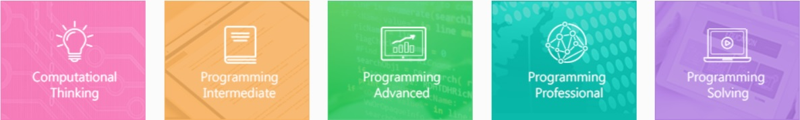

목차
- 데이지(DataScience Genie)란?
- 데이지 이용해보기
- 데이지 분석
- 데이지 사용사례
1. 데이지(DataScience Genie)란?

SW certificate A란 삼성에서 소프트웨어 직군을 준비하거나, 프로그래밍에 관심이 있는 사람들을 대상으로 발급해주는 증명서입니다. 소프트웨어 역량 테스트라는 시험을 치고, 시험에 합격한 사람들에게 "이 사람은 이정도 난이도의 문제를 해결할 수 있는 역량이 있다!"라는 인정을 해주는 것이죠. 시험은 크게 세 가지를 평가합니다.
- 배경 지식
- 논리적 사고 능력
- 구현력
위 세가지는 개발자에게 가장 중요한 세 가지 능력이라고 할 수 있습니다. 한 가지라도 부족할 경우 개인 프로젝트, 팀 프로젝트를 하기에 부족함이 있기 때문 인데요, 이러한 이유 때문에 삼성, SK, 네이버와 같은 IT관련 회사들은 SW 직무 지원자들에 한해서는 코딩 테스트를 진행하고 있습니다. 기존의 직무적성적합도 종합평가(aka 인적성) 보다는 실제 문제를 제시하고 문제를 해결할 수 있는 지를 평가하는 것이 실무에 더욱 도움이 된다고 판단한 것이지요.
삼성에서는 총 세 등급의 SW certificate를 제공합니다. A,B,C 순서대로 난이도가 높아지고, 요구사항과 제약사항 또한 많아집니다. 본 게시물은 세 등급의 시험 중 가장 낮은, 즉, 입사시험과 비슷한 난이도로 출제되는 A형을 다룹니다.
2. SW certificate를 따는 이유
SW certificate를 따는 이유는 크게 세 가지입니다.
- 삼성 그룹에 지원할 때 유리하기 때문
- 다른 기업의 코딩테스트를 준비하기에 도움이 되기 때문
- 본인의 코딩 실력을 시험하기 위해
우선, SW certificate를 따는 가장 근본적인 이유는 삼성 그룹에 지원할 때 유리하기 때문입니다. A형에서는 2문제가 출제되는데, 2문제를 모두 맞출 경우 삼성 공채에서 코딩테스트를 면제해줍니다. 즉, 코딩테스트를 미리 치고, 그 결과를 계속 사용할 수 있다는 말이죠. 공채 코딩 테스트를 치룰 때 당황하거나, 프로그램의 논리가 잘못 되어 탈락할 수 있는 위험을 없애주기에, 많은 사람들이 SW certificate 시험에 응시합니다.
SW certificate를 따는 두 번째 이유는 다른 기업의 코딩테스트를 준비하기에 도움이 되기 때문입니다. SW certificate에서 출제되는 시험의 유형과 다른 기업의 코딩테스트에서 출제되는 시험의 유형이 유사하기에, SW certificate 시험을 준비하는 것으로 다른 기업의 코딩 테스트에 대한 대비도 어느정도 가능합니다.
SW certificate를 따는 세 번째 이유는 본인의 코딩 실력을 시험하기 위해입니다. 보통 본인의 문제해결력을 시험하기 위한 방법으로는 Leetcode, Codeforces 와 같은 온라인 코딩 사이트에서 개최되는 대회에 참가하는 것이 일반적이지만, SCPC, SW certificate시험과 같은 오프라인 시험을 통해서도 자신의 약점을 확인하고 보완하는 것도 방법입니다.
3. SW certificate 취득에 필요한 배경지식
SW certificate A를 취득하기 위해서는 세 종류의 지식이 필요합니다.
- 프로그래밍 언어의 문법
- 기본적인 자료구조
- 기본적인 알고리즘
먼저, SW certificate A를 응시하기 위해서는 시험에 사용할 언어를 선택하고, 쓸 줄 알아야 합니다. 사용할 수 있는 언어는 C, C++, Java, Python로, ruby, javascript와 같은 다른 언어는 사용할 수 없습니다. 그렇기에 시험에 사용할 언어와 해당 언어의 사용법을 숙지하여야 시험을 수월하게 칠 수 있습니다.
다음으로, 자료구조, 혹은 자료구조개론과 같은 과목에서 배우는 자료구조를 알아야 합니다. A형의 경우 배열, 스택, 큐, 덱이 많이 사용되며 때에 따라서 우선순위 큐, 딕셔너리, 이진트리가 사용되는 경우도 있습니다.
마지막으로, 알고리즘 개론과 같은 과목에서 배우는 알고리즘에 대한 지식이 필요합니다. A형의 경우 DFS, BFS, 브루트 포스(완전탐색) 알고리즘 이 주로 출제되며, 때에 따라서 이분탐색, 백트래킹에 관한 문제가 출제되기도 합니다.
4. SW certificate를 신청하는 법

Sw certificate를 신청하기 위해서는 다음의 순서를 따르면 됩니다.
- 삼성 sw expert Academy에 접속한다
- 회원가입을 한다
- 난이도 D3이상의 문제를 2개이상 푼다
- 수시로 사이트에 접속하여 시험 신청 가능여부를 확인한다
먼저, 시험을 신청하는 사이트인 삼성 SW expert Academy에 가입해야 합니다. 해당 사이트에서 A형 시험을 신청하기 위해서는 신청일로부터 1달 이내에 푼 난이도 D3이상의 문제가 2개 이상이어야 합니다. D3이상 난이도의 문제를 2개 이상 풀었다면 이제는 신청 가능날짜가 있는지를 살펴봐야 합니다. 시험이 자주 있지 않을 뿐더러, 시험 신청이 다소 빨리 마감되기 때문인데요, 수시로 신청가능일자를 확인하는 것을 추천합니다.
5. 예시 문제를 풀어볼 수 있는 곳

예시 문제를 풀어볼 수 있는 사이트는 크게 두 곳입니다.
먼저 삼성 엑스퍼트 아카데미에서는 기출 문제와, 해당 문제를 푼 사람들의 코드를 볼 수 있습니다. 실제 시험을 신청하는 웹사이트이기도 합니다.
다음으로 백준 온라인 저지는 우리나라에서 가장 많은 알고리즘 문제를 가지고 있는 사이트입니다. 삼성 역량테스트(A형과 유사한 난이도)에 실제 기출된 시험을 풀어볼 수 있을 뿐만 아니라, 인터넷에 문제 번호를 검색하였을 때 해당문제에 대한 해설을 찾을 수 있는 경우도 많습니다.
블로그의 내용이 도움이 되었나요? 저에게 주신 의견을 바탕으로 더 나은 컨텐츠를 만들어갈게요:)